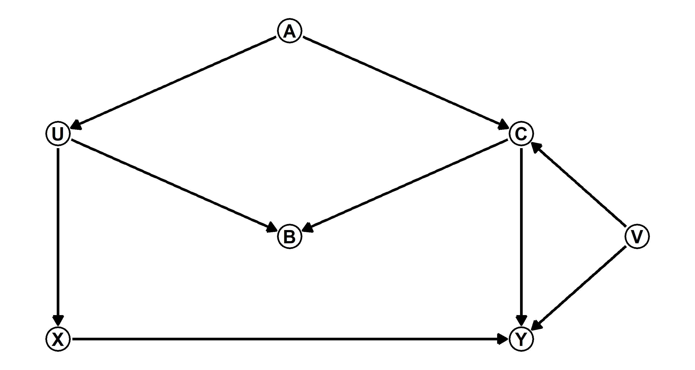
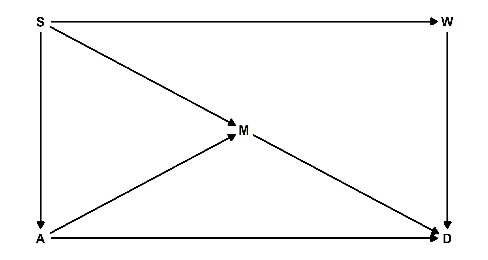
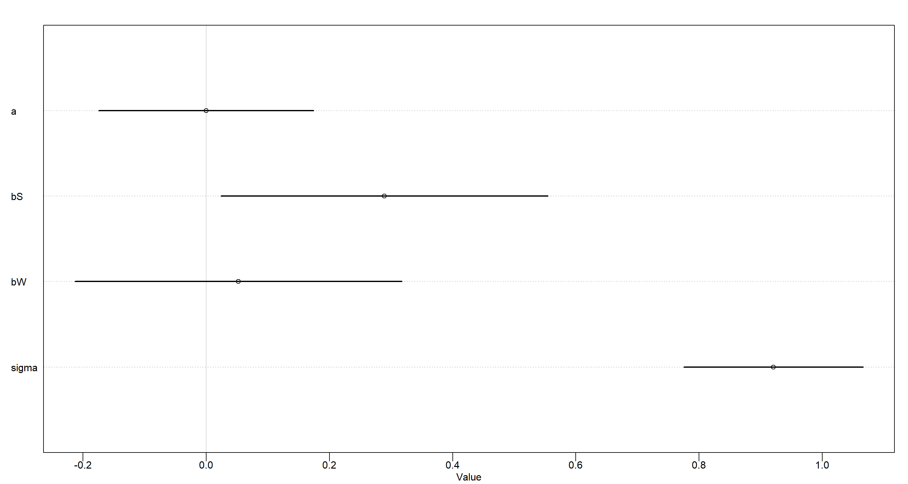
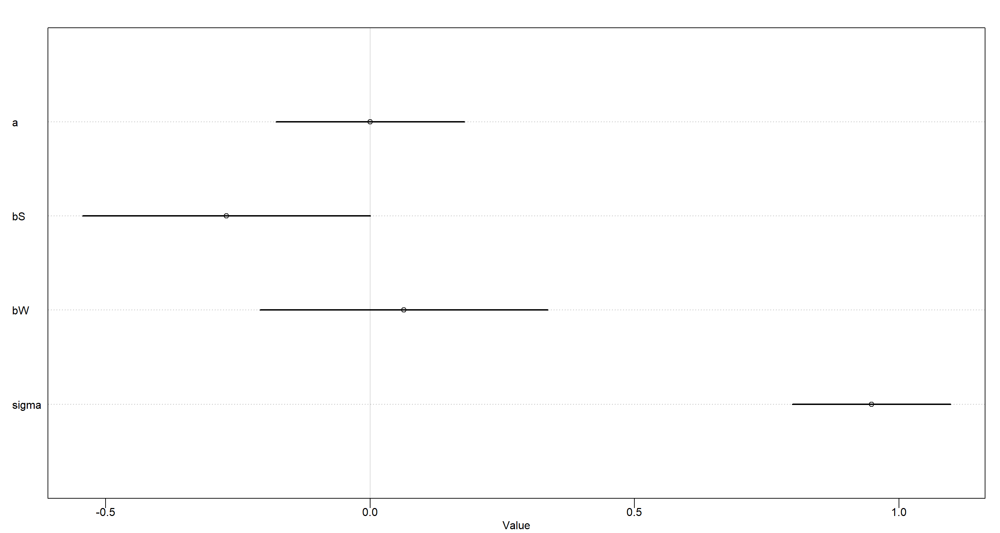
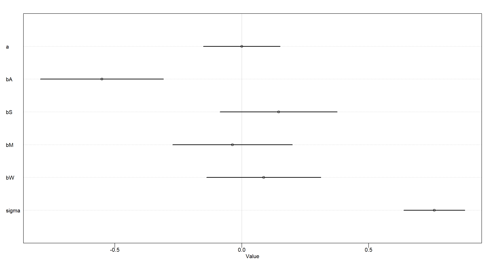
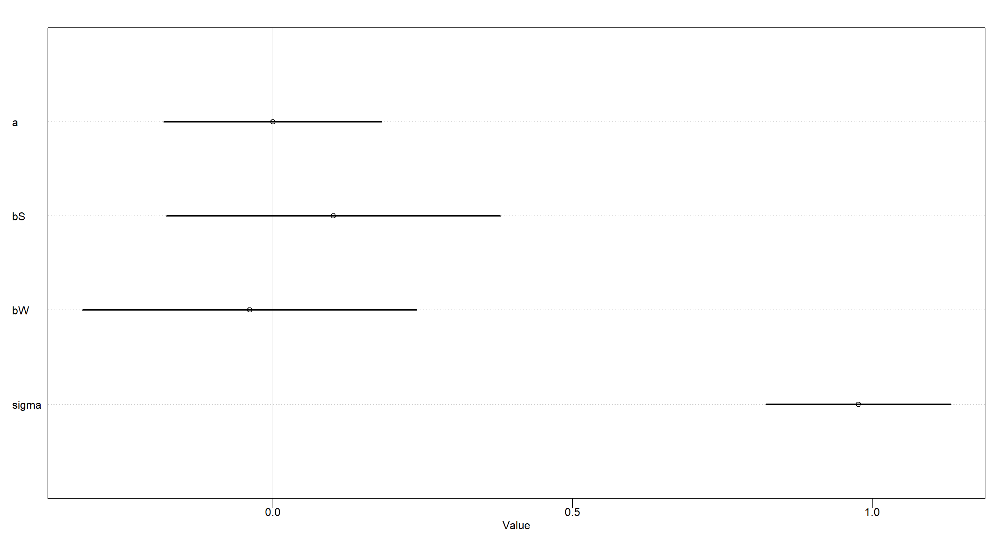
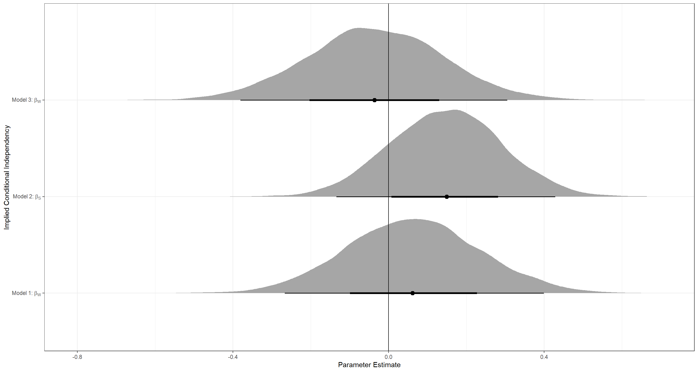

Chapter 06
The Haunted DAG & The Causal Terror
Material
Introduction
These are answers and solutions to the exercises at the end of chapter 6 in Satistical Rethinking 2 by Richard McElreath. I have created these notes as a part of my ongoing involvement in the AU Bayes Study Group. Much of my inspiration for these solutions, where necessary, has been obtained from Jake Thompson. The PDF version of Satistical Rethinking 2 is lacking some exercises of the print version, it seems. I do not address these here.
Medium Exercises
We are stepping right into R:
library(rethinking)
library(dagitty)
library(ggdag)
library(ggplot2)
library(tidybayes)
Practice M1
Question: Modify the DAG on page 190 to include the variable $V$, an unobserved cause of $C$ and $Y$: variables $C ← V → Y$. Reanalyze the DAG. How many paths connect $X$ to $Y$? Which must be closed? Which should you condition on now?
Answer: Let’s start by assigning some coordinates and names of our variables which will end up as nodes in our DAG:
dag_coords <- data.frame(
name = c("X", "U", "A", "B", "C", "Y", "V"),
x = c(1, 1, 2, 2, 3, 3, 3.5),
y = c(1, 2, 2.5, 1.5, 2, 1, 1.5)
)
Now I add the actual path specifications and make a DAG object:
DAG_m1 <- dagify(Y ~ X + C + V,
X ~ U,
U ~ A,
B ~ U + C,
C ~ A + V,
coords = dag_coords
)
Finally, I plot the resulting object:
ggplot(DAG_m1, aes(x = x, y = y, xend = xend, yend = yend)) +
geom_dag_point(shape = 1, stroke = 2, color = "black") +
geom_dag_text(color = "black", size = 10) +
geom_dag_edges(
edge_color = "black", edge_width = 2,
arrow_directed = grid::arrow(
length = grid::unit(15, "pt"),
type = "closed"
)
) +
theme_void()

The original DAG on page 190 boasted the following two paths which needed closing:
- $X <- U <- A -> C -> Y$
- $X <- U -> B <- C -> Y$
These remain unaltered. Through our novel inclusion of $V$, we now have another two paths that require closing between $X$ and $Y$:
3. $X <- U <- A -> C <- V -> Y$
4. $X <- U -> B <- C <- V -> Y$
Now, how do we close these paths? First of all, paths 2 and 4 are already closed because $B$ acts as a collider. Path 3 is also closed as $C$ acts as a collider (Thanks to
Ruxandra Tesloianu for pointing this out to me). Path 1 requires closing since $A$ is a fork. If we leave it up to R, we would condition on the following variables to close all paths between $X$ and $Y$:
adjustmentSets(DAG_m1, exposure = "X", outcome = "Y")
## { C, V }
## { A }
## { U }
Alright, let’s think about this. Our above DAG does not yet know which variables are unobserved. R suggests we condition on $C$ and $V$. That’s going to be impossible since we don’t have data for $V$. Next, we are pointed towards conditioning on $A$ as an alternative. That looks alright. Thirdly, we are prompted to consider conditioning on $U$. Again, we don’t have data for that. So, we are only left with one option: Condition on $A$.
Finally, let’s actually give R all the information we have and rerun the adjustmentSets() function:
DAG_m1 <- dagitty("dag { U [unobserved]
V [unobserved]
X -> Y
X <- U <- A -> C -> Y
U -> B <- C
C <- V -> Y }")
adjustmentSets(DAG_m1, exposure = "X", outcome = "Y")
## { A }
Cool. That’s exactly the solution we arrived at earlier as well.
Hard Exercises
Practice H1
Question: Use the Waffle House data, data(WaffleDivorce), to find the total causal influence of number of Waffle Houses on divorce rate. Justify your model or models with a causal graph.
Answer: Let’s start by recreating the DAG on page 191 with some code from page 192 while sprucing it up with some coordinates for our nodes in the DAG:
# Define Paths
DAG_h1 <- dagitty("dag {
A -> D
A -> M -> D
A <- S -> M
S -> W -> D
}")
# Add Coordinates
coordinates(DAG_h1) <- list(
x = c(A = 1, S = 1, M = 2, W = 3, D = 3),
y = c(A = 1, S = 3, M = 2, W = 3, D = 1)
)
# Plotting
ggplot(DAG_h1, aes(x = x, y = y, xend = xend, yend = yend)) +
geom_dag_text(color = "black", size = 10) +
geom_dag_edges(
edge_color = "black", edge_width = 2,
arrow_directed = grid::arrow(
length = grid::unit(15, "pt"),
type = "closed"
)
) +
theme_void()

Let’s check which variables we need to condition on to allow any subsequent model to identify the causal relationship between $W$ and $D$:
adjustmentSets(DAG_h1, exposure = "W", outcome = "D")
## { A, M }
## { S }
We could either condition on $A$ and $M$, or condition only on $S$. The latter seems simpler to me, so I’ll run with that! On to build that model:
## Loading Data
data(WaffleDivorce)
d <- WaffleDivorce
## Scaling Relevant Variables
d$D <- scale(d$Divorce)
d$W <- scale(d$WaffleHouses)
d$S <- scale(d$South)
## Specifying and Running Model
MOD_h1 <- quap(
alist(
D ~ dnorm(mu, sigma),
mu <- a + bS * S + bW * W,
a ~ dnorm(0, 0.2),
c(bS, bW) ~ dnorm(0, 0.5),
sigma ~ dexp(1)
),
data = d
)
plot(precis(MOD_h1))

Our model clearly shows that once we know about whether a state is located in the Southern Contiguous U.S., we don’t gain additional information about the local divorce rate by learning about the number of Waffle Houses in the area.
Practice H2
Question: Build a series of models to test the implied conditional independencies of the causal graph you used in the previous problem. If any of the tests fail, how do you think the graph needs to be amended? Does the graph need more or fewer arrows? Feel free to nominate variables that aren’t in the data.
Answer: Let’s start by letting R identify all the implied conditional independecies:
impliedConditionalIndependencies(DAG_h1)
## A _||_ W | S
## D _||_ S | A, M, W
## M _||_ W | S
There are three models we need to build to assertain the conditional independencies here.
Firstly, I am reloading the data and standardise all variables of interest:
## Loading Data
data(WaffleDivorce)
d <- WaffleDivorce
## Scaling Relevant Variables
d$A <- scale(d$MedianAgeMarriage)
d$D <- scale(d$Divorce)
d$M <- scale(d$Marriage)
d$W <- scale(d$WaffleHouses)
d$S <- scale(d$South)
Now let’s get going with the actual models:
- A || W | S
MOD_h2a <- quap(
alist(
A ~ dnorm(mu, sigma),
mu <- a + bS * S + bW * W,
a ~ dnorm(0, 0.2),
c(bS, bW) ~ dnorm(0, 0.5),
sigma ~ dexp(1)
),
data = d
)
plot(precis(MOD_h2a))

Conditional independence of $A$ of $W$ given $S$ - confirmed!
- D || S | A, M, W
MOD_h2b <- quap(
alist(
D ~ dnorm(mu, sigma),
mu <- a + bA * A + bS * S + bM * M + bW * W,
a ~ dnorm(0, 0.2),
c(bA, bS, bM, bW) ~ dnorm(0, 0.5),
sigma ~ dexp(1)
),
data = d
)
plot(precis(MOD_h2b))

Conditional independence of $D$ of $S$ given $A$, $M$, and $W$ - confirmed!
- M || W | S
MOD_h2c <- quap(
alist(
M ~ dnorm(mu, sigma),
mu <- a + bS * S + bW * W,
a ~ dnorm(0, 0.2),
c(bS, bW) ~ dnorm(0, 0.5),
sigma ~ dexp(1)
),
data = d
)
plot(precis(MOD_h2c))

Conditional independence of $M$ of $W$ given $S$ - confirmed!
I finish this exercise by looking at only the relevant posteriors for each model:
Plot_df <- data.frame(
Posteriors = c(
extract.samples(MOD_h2a, n = 1e4)$bW,
extract.samples(MOD_h2b, n = 1e4)$bS,
extract.samples(MOD_h2c, n = 1e4)$bW
),
Name = rep(c("bw", "bS", "bw"), each = 1e4),
Model = rep(c("h2_a", "h2_b", "h2_c"), each = 1e4)
)
lbls <- c(
expression("Model 1:" ~ beta[W]),
expression("Model 2:" ~ beta[S]),
expression("Model 3:" ~ beta[W])
)
ggplot(Plot_df, aes(y = Model, x = Posteriors)) +
stat_halfeye() +
scale_y_discrete(labels = lbls) +
labs(x = "Parameter Estimate", y = "Implied Conditional Independency") +
theme_bw() +
geom_vline(xintercept = 0)

Session Info
sessionInfo()
## R version 4.0.5 (2021-03-31)
## Platform: x86_64-w64-mingw32/x64 (64-bit)
## Running under: Windows 10 x64 (build 19043)
##
## Matrix products: default
##
## locale:
## [1] LC_COLLATE=English_United Kingdom.1252 LC_CTYPE=English_United Kingdom.1252 LC_MONETARY=English_United Kingdom.1252 LC_NUMERIC=C
## [5] LC_TIME=English_United Kingdom.1252
##
## attached base packages:
## [1] parallel stats graphics grDevices utils datasets methods base
##
## other attached packages:
## [1] tidybayes_2.3.1 ggdag_0.2.3 dagitty_0.3-1 rethinking_2.13 rstan_2.21.2 ggplot2_3.3.6 StanHeaders_2.21.0-7
##
## loaded via a namespace (and not attached):
## [1] matrixStats_0.61.0 R.cache_0.14.0 tools_4.0.5 backports_1.2.1 bslib_0.2.4 utf8_1.2.1 R6_2.5.0 DBI_1.1.1 colorspace_2.0-0
## [10] ggdist_2.4.0 withr_2.4.2 tidyselect_1.1.0 gridExtra_2.3 prettyunits_1.1.1 processx_3.5.1 curl_4.3.2 compiler_4.0.5 cli_3.0.0
## [19] arrayhelpers_1.1-0 labeling_0.4.2 bookdown_0.22 sass_0.3.1 scales_1.1.1 mvtnorm_1.1-1 callr_3.7.0 stringr_1.4.0 digest_0.6.27
## [28] rmarkdown_2.7 R.utils_2.10.1 pkgconfig_2.0.3 htmltools_0.5.1.1 styler_1.4.1 highr_0.9 rlang_0.4.11 shape_1.4.5 jquerylib_0.1.4
## [37] farver_2.1.0 generics_0.1.0 svUnit_1.0.6 jsonlite_1.7.2 dplyr_1.0.5 R.oo_1.24.0 distributional_0.2.2 inline_0.3.17 magrittr_2.0.1
## [46] loo_2.4.1 Rcpp_1.0.7 munsell_0.5.0 fansi_0.4.2 viridis_0.6.0 lifecycle_1.0.0 R.methodsS3_1.8.1 stringi_1.5.3 yaml_2.2.1
## [55] ggraph_2.0.5 MASS_7.3-53.1 pkgbuild_1.2.0 plyr_1.8.6 grid_4.0.5 ggrepel_0.9.1 forcats_0.5.1 crayon_1.4.1 lattice_0.20-41
## [64] graphlayouts_0.7.1 knitr_1.33 ps_1.6.0 pillar_1.6.0 igraph_1.2.6 boot_1.3-27 codetools_0.2-18 stats4_4.0.5 glue_1.4.2
## [73] evaluate_0.14 blogdown_1.3 V8_3.4.1 RcppParallel_5.1.2 vctrs_0.3.7 tweenr_1.0.2 gtable_0.3.0 purrr_0.3.4 polyclip_1.10-0
## [82] tidyr_1.1.3 rematch2_2.1.2 assertthat_0.2.1 xfun_0.22 ggforce_0.3.3 tidygraph_1.2.0 coda_0.19-4 viridisLite_0.4.0 tibble_3.1.1
## [91] ellipsis_0.3.2